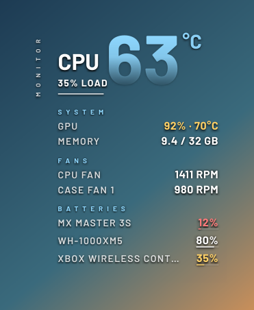
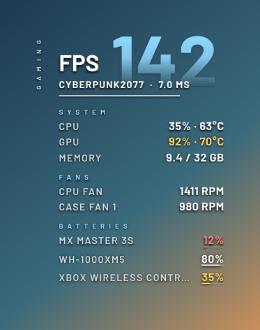

Poster & Card Looks
Start frameless in Poster with bold Barlow typography and a faded anchor numeral, or switch to Card for translucent tiles with live history sparklines. Customize size, panel opacity, fonts, and colours.
An always-on-top widget that shows live game FPS, CPU & GPU temperature and load, memory, fan speeds, and controller, keyboard & headset batteries. It sits quietly on your wallpaper or over your game — reading sensors only, never changing fan speeds or clocks.
Captured directly from Prism Monitor in the Poster look. Unavailable readings are omitted automatically so the layout stays crisp and clutter-free.

Shows CPU or GPU temperature as the anchor numeral alongside system usage, motherboard fans, and peripheral batteries.

When a game starts, the big number flips to live FPS and frame time, tucking CPU load and temperature cleanly into the System block.
Built in Python & PySide6 (Qt 6) for crisp high-DPI rendering, fractional scaling, and low idle overhead.
Start frameless in Poster with bold Barlow typography and a faded anchor numeral, or switch to Card for translucent tiles with live history sparklines. Customize size, panel opacity, fonts, and colours.
Measures real presentation frame rates via bundled Intel PresentMon on Windows (DirectX, Vulkan, OpenGL) and a lightweight Vulkan layer on Linux — including Steam/Proton games with zero launch flags.
Check PlayStation and Xbox controllers, Bluetooth mice, keyboards, headsets, and laptop batteries at a glance — with colour-coded charge bars for low levels.
Pin it On top of windows over games, keep it Normal, or sink it Behind windows like a desktop clock. Enable click-through so mouse clicks pass straight to your game.
Beyond its standalone window, the Linux installer includes native widget integration for KDE Plasma 6 and GNOME 45–49 fed directly by the background tray process.
Keep your PC awake for a set duration or until a download, render, or running app finishes — then optionally sleep or shut down automatically, like caffeinate on a Mac.
Hover any row inside the widget to inspect its exact sensor source. No bloated suites or background web views.
| Metric | Windows 10 / 11 | Linux |
|---|---|---|
| CPU | Load from Windows. Temperature, package power, and measured clocks via the optional sensor helper (LibreHardwareMonitor 0.9.6). | /proc, cpufreq, kernel hwmon (k10temp, coretemp, zenpower), and RAPL package power. |
| GPU | AMD driver (ADL): edge & hotspot temperature, load, clock, board power, fan RPM, and VRAM. | amdgpu sysfs files: temperature, power, clock, fan RPM, load, and VRAM. |
| Memory & Swap | Windows memory status and page file usage. | /proc/meminfo including swap partitions, swap files, and zram. |
| Motherboard Fans | Super I/O motherboard fan headers through the elevated sensor helper. | Kernel hwmon fan inputs (with Super I/O driver such as nct6775 or it87). |
| Game FPS | Bundled Intel PresentMon 2.6.0: DirectX, Vulkan, and OpenGL titles without DLL injection. | Custom lightweight Vulkan layer: native Vulkan games and Windows games via Steam/Proton & DXVK. |
| Batteries | PlayStation & Xbox controllers, Bluetooth keyboards, mice & headsets, plus laptop battery. | UPower (game controllers, BlueZ devices, Logitech peripherals, and laptop battery). |
Latest release: v1.1.0 · Licensed under GPL-3.0.
PrismMonitor-Setup-1.1.0.exe
Installs for your account with no admin prompt. Includes Start Menu shortcut, optional CPU sensor helper setup, and keeps settings on upgrade.
Download Installer (.exe)ec979fe888812175b2700983867ae80680af4489bdca8114c715759bad8b5d34
PrismMonitor-windows.zip
Prefer no installer? Extract the folder anywhere, keep its files together, and launch PrismMonitor\PrismMonitor.exe directly.
5aa896954a74e361d9a921d92d8881825733d8c315820c0bf1dfab92bbec9a93
Tested on Arch Linux with KDE Plasma 6 (Wayland). No administrator rights are needed at runtime — all sensors come directly from kernel interfaces.
sudo pacman -S --needed git python gcc vulkan-icd-loader vulkan-tools
For game FPS, ensure your GPU Vulkan driver is installed: vulkan-radeon (AMD), vulkan-intel (Intel), or nvidia-utils (NVIDIA).
git clone https://github.com/danny19862025/prism-monitor.git
cd prism-monitor
./Install-Linux.sh
Creates an isolated Python environment, compiles the Vulkan FPS layer, adds the app launcher, enables autostart, and installs KDE Plasma 6 / GNOME desktop widgets where detected. Safe to re-run for updates after git pull.
git clone https://github.com/danny19862025/prism-monitor.git
cd prism-monitor
Run-PrismMonitor.cmd :: set up venv and run from source
Build-Windows.cmd :: run tests and build dist\PrismMonitor-windows.zip
With Inno Setup 6 installed (winget install JRSoftware.InnoSetup), the build script also generates dist\PrismMonitor-Setup-<version>.exe.
QT_QPA_PLATFORM=offscreen .venv/bin/python -m unittest discover -s tests -vDive deeper into settings, sensor helper architecture, and troubleshooting in the full documentation guide.
Hardware monitoring tools run close to your system. Prism Monitor is engineered so you can verify every boundary.
Everything stays on your PC. Prism Monitor contains zero analytics, ads, or background tracking. Its only network request goes to GitHub when you explicitly click Check for updates.
Prism Monitor never alters fan curves, voltages, or clock speeds, and never installs kernel drivers. On Windows it uses LibreHardwareMonitorLib (and PawnIO if you choose to install it); on Linux it reads standard kernel sysfs/hwmon.
The desktop widget runs unprivileged. On Windows, optional elevated sensor reading lives in a small C# helper copied to protected Program Files, serving JSON over a user-scoped named pipe with no network access.